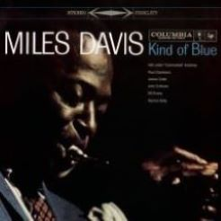
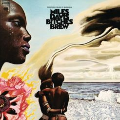
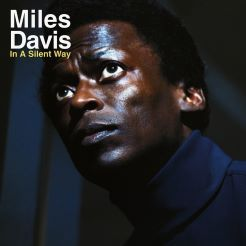

Kind of Blue (1959)
"Kind of Blue", released in 1959. Widely regarded as one of the greatest jazz recordings, it epitomizes the modal jazz genre. Davis, along with a stellar lineup including John Coltrane and Bill Evans, created an improvisational masterpiece that is celebrated for its atmospheric, emotive tone. The album's laid-back, cool style and timeless compositions, such as "So What" and "Freddie Freeloader," continue to captivate listeners and influence generations of musicians.

Bitches Brew (1970)
"Bitches Brew", 1970 jazz-fusion album by Miles Davis. Known for its experimental and avant-garde approach, the album incorporates elements of rock and electronic music. Davis assembled a large ensemble of talented musicians, resulting in a dense, improvisational sound. The album's fusion of genres and innovative production techniques had a profound impact, influencing the direction of jazz and beyond.

In a Silent Way (1969)
"In a Silent Way" is a 1969 album by Miles Davis that marks a pivotal moment in the evolution of jazz fusion. Departing from traditional jazz structures, Davis blends electric instruments and studio effects to create a serene, atmospheric sound. The album's minimalist approach and seamless integration of rock and jazz elements foreshadow the fusion movement. "In a Silent Way" is a landmark in Davis's discography, showcasing his willingness to explore new sonic territories.